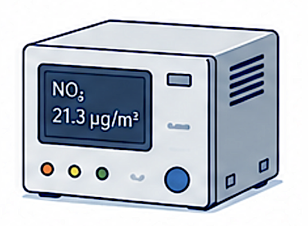

SamplingProcess
{kind=link}

Attributes
Attribute Code |
Attribute Name |
SQL DB Data Type |
ReportNet3 Data Type |
Properties |
Code list |
Related table(s) |
In Reporting |
|---|---|---|---|---|---|---|---|
SPP_01 |
CountryCode |
varchar(2) |
string |
PK |
|||
SPP_02 |
ProcessId |
varchar(150) |
string |
PK |
|||
SPP_03 |
AssessmentMethodId |
varchar(50) |
string |
PK |
ComplianceAssessmentMethod |
||
SPP_04 |
ProcessActivityBegin |
datetime |
datetime |
PK |
|||
SPP_05 |
ProcessActivityEnd |
datetime |
datetime |
||||
SPP_06 |
PollutantId |
int |
numeric |
||||
SPP_07 |
MeasurementType |
varchar(50) |
string |
||||
SPP_08 |
Method |
varchar(50) |
string |
||||
SPP_09 |
Equipment |
varchar(50) |
string |
||||
SPP_10 |
AnalyticalTechnique |
varchar(50) |
string |
||||
SPP_11 |
EquivalenceDemonstrated |
varchar(50) |
string |
||||
SPP_12 |
DataQualityDocumentId |
varchar(150) |
string |
Documentation |
|||
SPP_13 |
EquivalenceDemonstrationDocumentId |
varchar(150) |
string |
Documentation |
|||
SPP_14 |
ProcessDocumentId |
varchar(150) |
string |
Documentation |
|||
SPP_15 |
Country |
varchar(20) |
string |
N |
|||
SPP_16 |
SamplingPointReferenceId |
varchar(32) |
string |
N |
|||
SPP_17 |
Pollutant |
varchar(50) |
string |
N |
|||
SPP_18 |
Deletion |
bit |
boolean |
N |
Note
Country, SamplingPointReferenceId, Pollutant and Deletion are Reference attributes without a corresponding attribute in the reporting data model.
Attribute details
SPP_01 - CountryCode
Content
Country or territory ISO2 code.
In Reporting
SPP_02 - ProcessId
Content
Identifier of the sampling process, given by data provider.
Remarks
The same ProcessId can be re-used for the same equipment configurations under different sampling points (AssessmentMethodId).
In Reporting
SPP_03 - AssessmentMethodId
Content
Identifier of the assessment method (sampling point) given by data provider.
Remarks
A sampling point (AssessmentMethodId) can be closed (set as inactive) by ending the ProcessId (specifying ProcessActivityEnd). The same sampling point can be re-opened, also with the same ProcessId, by adding new record with new ProcessActivityBegin.
In Reporting
SPP_04 - ProcessActivityBegin
Content
Start time of the measurement process.
Remarks
If there is more than one ProcessId within the same AssessmentMethodId, then ProcessActivityBegin - ProcessActivityEnd should not overlap within the same AssessmentMethodId.
In Reporting
SPP_05 - ProcessActivityEnd
Content
End time of the measurement process.
In Reporting
SPP_06 - PollutantId
Content
Code of the air pollutant being measured, as per Data Dictionary standards.
In Reporting
SPP_07 - MeasurementType
Content
Classification of measurement methods into generic types.
In Reporting
SPP_08 - Method
Content
Specific method used for measuring air pollutants.
In Reporting
SPP_09 - Equipment
Content
Equipment used for air pollutant measurement.
In Reporting
SPP_10 - AnalyticalTechnique
Content
Analytical technique used for measuring pollutants.
In Reporting
SPP_11 - EquivalenceDemonstrated
Content
Status of equivalence demonstration according to regulatory requirements.
In Reporting
SPP_12 - DataQualityDocumentId
Content
Identifier of the Quality Assurance report given by data provider.
In Reporting
SPP_13 - EquivalenceDemonstrationDocumentId
Content
Identifier of the Equivalence demonstration report given by data provider.
In Reporting
SPP_14 - ProcessDocumentId
Content
Identifier of the documentation on process and data quality given by data provider.
In Reporting
SPP_15 - Country
Content
Name of the country.
In Reporting
N - No corresponding reporting attribute.
SPP_16 - SamplingPointReferenceId
Content
Reference identifier of the assessment method (sampling point), either re-used or given by data provider following strict rules.
In Reporting
N - No corresponding reporting attribute.
SPP_17 - Pollutant
Content
Name of the air pollutant being measured, as per Data Dictionary standards.
In Reporting
N - No corresponding reporting attribute.
SPP_18 - Deletion
Content
Flag to indicate that this element must be deleted.
In Reporting
N - No corresponding reporting attribute.